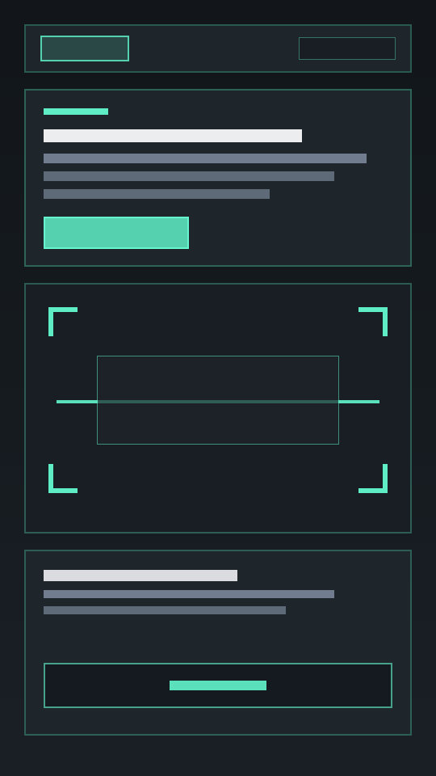
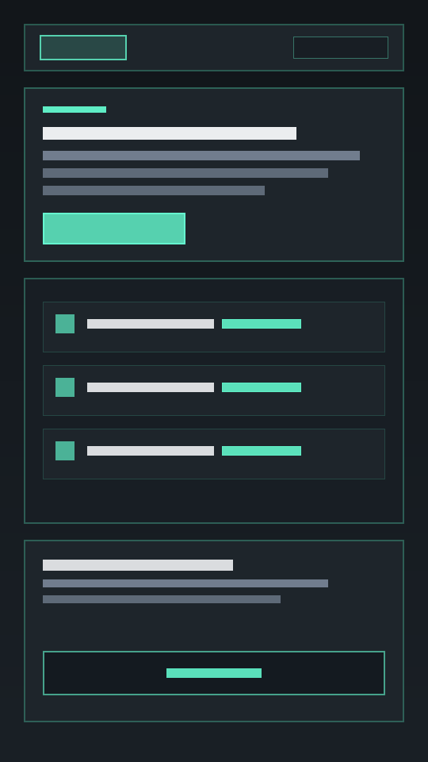
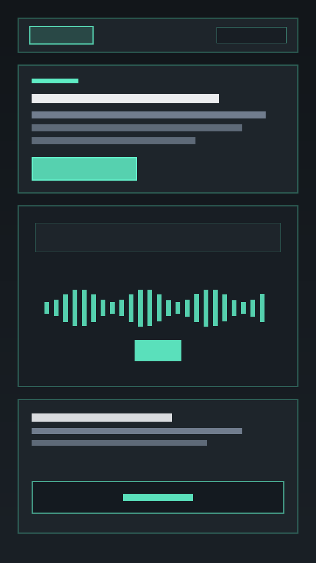
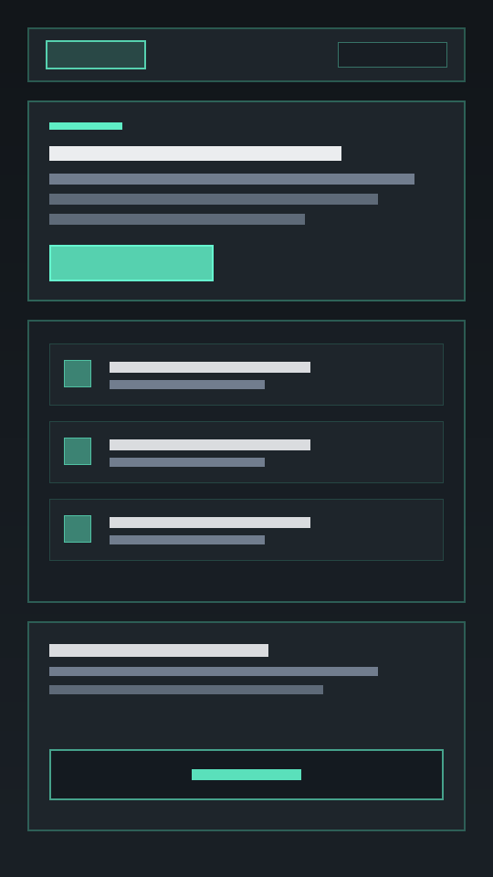

TarkApp — персональный учебный проводник в эстонскую школьную программу
Для чего создано приложение
Переход на 100% обучение на эстонском языке — это серьёзная нагрузка и для детей, и для родителей. Вечерние уроки нередко превращаются в выматывающий стресс, а родители не всегда могут подсказать, так как сами не владеют академической эстонской терминологией.
Обычные онлайн-переводчики переводят слова механически и часто путают школьный контекст, а готовые решебники и чат-боты просто выдают готовый ответ, лишая ребёнка возможности понять тему и научиться отвечать самостоятельно.
TarkApp — это не переводчик и не шпаргалка. Это умный школьный наставник, задача которого — снять языковой барьер, помочь ребёнку понять суть задания и научить его уверенно формулировать ответ на эстонском языке.

Как это работает

Мультимодальный анализ страницы
Ребёнок наводит камеру смартфона на страницу эстонского учебника, рабочей тетради (Opiq, Koolibri, Avita) или лист с заданием. Алгоритм мгновенно оцифровывает визуальный контекст и вычленяет структуру задачи.
Объяснение через любимые увлечения
Сложная суть задания раскрывается на родном языке через аналогии из мира интересов ребёнка (LEGO, Minecraft, спорт, технологии, космос). Абстрактное академическое правило связывается с понятным жизненным опытом без зазубривания сухих формулировок.


Пошаговый алгоритм решения и речевой каркас
TarkApp выстраивает направляющий план рассуждения («как прийти к ответу») и формирует готовый грамматический шаблон эстонского предложения с пропусками (___). Ребёнок самостоятельно выполняет вычисления, но формулирует и записывает академически грамотный эстонский ответ, готовый к уверенной защите у доски.
Адаптивное изоморфное моделирование (Разбор аналогичных примеров)
Для математических и естественно-научных задач система генерирует задачу-близнец с альтернативными числовыми параметрами. Ученик видит практическую реализацию формулы в действии, сохраняя возможность решить свой исходный номер с чистого листа.


Аудиальная поддержка и фонетическое якорение
Каждое задание сопровождается спокойной аудиоподсказкой живым голосом для снятия психоэмоционального зажима, а также возможностью мгновенно прослушать эталонное нативное произношение любого эстонского термина с выверенной долготой звуков.
Интеллектуальный словарик урока (Sõnastik) с автосохранением
Все ключевые предметные термины из разобранного задания автоматически извлекаются и компонуются в персональный глоссарий для интервального повторения перед контрольными работами (kontrolltööd).


Сквозной архив и история разборов
Полная база всех отсканированных уроков сохраняется в локальной истории устройства. Ребёнок и родители могут в любой момент вернуться к сложной теме перед тестом без повторного сканирования учебника.
Экспресс-переводчик академического контекста (Kiirtõlge)
Встроенный инструмент быстрого перевода отдельных терминов и словосочетаний. В отличие от универсальных переводчиков, он отсекает бытовой сленг и выдаёт строго академическое значение слова в рамках действующей школьной программы Эстонии.

Адаптация под возраст: три учебных звена
Первоклассник и десятиклассник мыслят, читают и учатся совершенно по-разному. TarkApp автоматически перестраивает глубину терминологии, сложность подачи и логические акценты под выбранное звено:

1. Младшая школа (1–4 классы / Algkool):
В чём сложность: Дети только учатся читать на эстонском, быстро устают от длинных инструкций и боятся ошибиться.
Как помогает TarkApp: Главный упор сделан на голосовое восприятие — ребёнок может не разбирать длинный текст глазами, а прослушать подсказку на слух. Сами объяснения формулируются через простые игровые образы и наглядные жизненные аналогии.
2. Основная школа (5–9 классы / Põhikool):
В чём сложность: Резкий скачок терминологии (природоведение, физика, химия, история, география) и регулярная подготовка к контрольным работам (kontrolltööd).
Как помогает TarkApp: Фокус смещается на системный словарь (Sõnastik) и структурированные выжимки правил. Примеры связываются с реальным миром подростков, технологиями и практическими задачами, помогая выстроить понятия в понятную причинно-следственную цепочку.


3. Старшие классы (10–12 классы / Gümnaasium):
В чём сложность: Большой объём сложной профильной терминологии по точным и естественным наукам на эстонском языке.
Как помогает TarkApp: Быстрая распаковка сложных академических терминов и понятийный разбор параграфов без потери времени на ручной поиск в словарях, сохраняя взрослый и сдержанный тон подсказок.
Функция «Познание мира» (Loodusõpetus)
Если навести камеру не на учебник, а на окружающий мир — домашнего питомца, дерево за окном, кружку на столе или игрушку — TarkApp превращается в интерактивного исследователя. Приложение распознаёт объект, рассказывает короткий познавательный факт, даёт 3–4 полезных эстонских слова и разговорную фразу для практики речи в реальной жизни.


Главные принципы
Учит думать, а не списывать: Приложение не решает примеры за ученика, а даёт педагогическую опору для самостоятельного решения.
Полная анонимность и безопасность (Zero-PII): Приложение не собирает личные данные детей, фамилии, адреса, номера школ или личные коды (isikukood). Вся работа строится без создания профилей с персональной информацией.
Спокойствие в семье: Родителям больше не нужно часами разбирать незнакомые термины со словарем — ребёнок обретает уверенность, а вечер в семье остаётся временем для отдыха, а не споров над тетрадками.
Научная и психологическая база: почему это работает
TarkApp построен на доказательной когнитивной психологии и методиках обучения, подтверждённых международными исследованиями (включая мета-анализы профессора Джона Хэтти и работы ведущих мировых лабораторий изучения памяти):
Теория двойного кодирования (Dual Coding Theory, проф. Аллан Пайвио): Мозг обрабатывает зрительную и вербальную информацию по двум независимым параллельным каналам. Совмещение текста на экране, наглядного разбора и живого нативного аудиопроизношения термина задействует оба канала восприятия одновременно, ускоряя формирование долговременных нейронных связей.
Метод Фейнмана (понимание через простые аналогии): Нобелевский лауреат по физике Ричард Фейнман доказал: настоящее усвоение материала происходит тогда, когда сложная абстрактная концепция объясняется языком простых образов. TarkApp переводит сухие академические правила на понятный язык детского мира — через кубики конструктора, игровую механику или реальные жизненные ситуации.
Активное припоминание (Active Recall / Retrieval Practice, исследования Дж. Данлоски и проф. Р. Бьорка): Когнитивные психологи доказали, что пассивное перечитывание или просмотр готового решения почти бесполезны для долговременной памяти. Мозг учится только тогда, когда с усилием извлекает знание наружу. Наш речевой каркас с пропусками (___) требует от ребёнка самостоятельно применить правило и вписать правильный ответ.
Принцип «желанных трудностей» (Desirable Difficulties, проф. Роберт Бьорк): Готовые решебники вредят ученику, так как полностью убирают мыслительное усилие. TarkApp устраняет парализующий языковой стресс, но сохраняет здоровую когнитивную нагрузку, необходимую для глубокого понимания предмета.
Педагогические леса (Scaffolding / Зона ближайшего развития, Дж. Брунер, Л. С. Выготский): Обучение продуктивно, когда задача находится чуть выше текущих самостоятельных возможностей ребёнка, но посильна при наличии временной опоры. TarkApp предоставляет ученику надёжную ступеньку (алгоритм рассуждения + речевой шаблон), опираясь на которую он делает итоговый шаг сам.


Мост к уверенности
TarkApp не заменяет школу и учителя — он даёт ребёнку опору именно в тот момент, когда рядом нет подсказки. Мы превращаем эстонский язык из непреодолимой преграды в естественный рабочий инструмент, возвращая ребёнку интерес к учёбе, а семье — спокойные вечера.